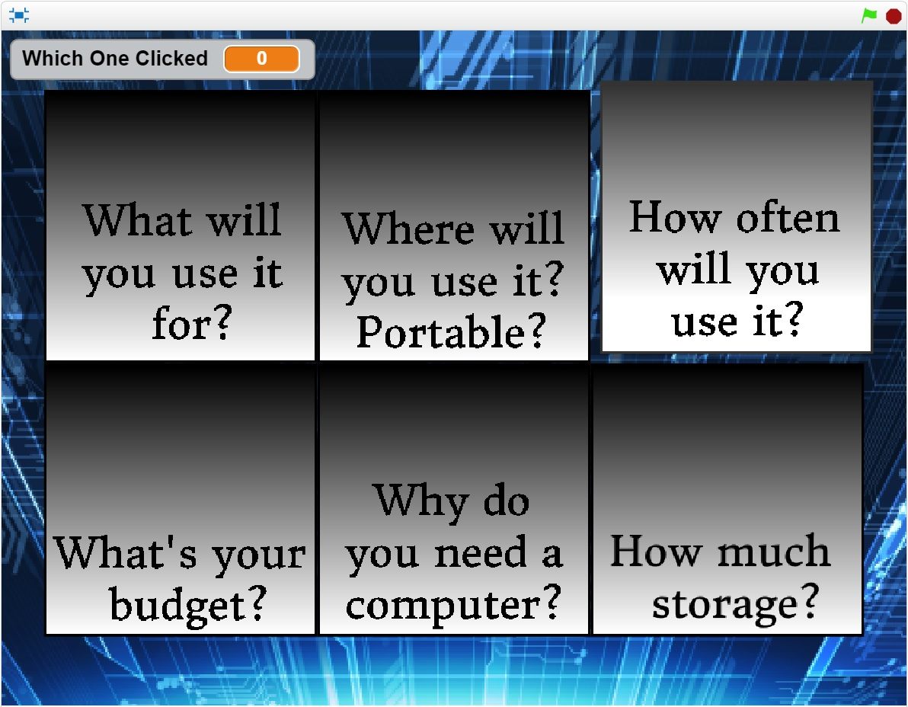
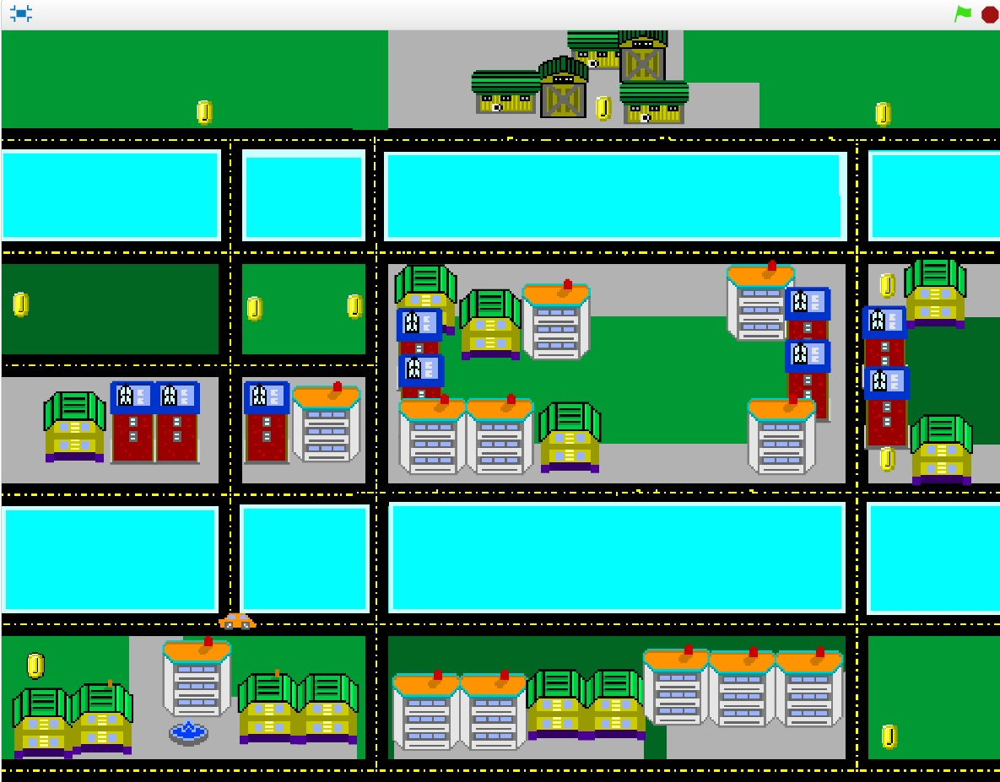

Used scratch to create an animation of my name. The requirements were to add in at least an infinite loop, each letter of my name must have a unique personality, and give them 3 unique behaviors. To start the program, you pressed the green flag, I added a function to reset the screen and to start everything over again. It was very much like a cartoon with a bit of humor in it.
Concepts Learned
I learned how to use broadcast to tell the sprite when to jump and respond with accuracy rather than having to put many wait blocks
I also learned how to use event blocks (green flag and space bar)
Learned how to use loops (forever block) to repeat over and over again
I learned how to use X and Y values to make the movements of the letters more accurate and precise than a move block.
Computer Buying Project

Description
Used Scratch to create a button presentation presenting multiple computers. The requirements included a way to show which computer won, the set of questions, and a range of different specifications that the computer had to meet. To start program the green flag was pressed, and to meet each of the questions you clicked on each of the buttons.
Concepts Learned
How to use variables to track what page is open
How to disable users from using the button more than once
Use of broadcast when pressing a button
Use of Functions to highlight buttons
Scratch Final Project

Description
This was my final project in the scratch curriculum of the year. I was given the option of a game or story, I happen to chose Game. I created a maze-esque game with a car looking around for coins with cops on the prowl for him. Most of the game revolves around the if then function for detecting what level and how many coins have been collected. A green flag and space key are required to start the game.
Concepts Learned
How to Code sprite detection
How to make a game over
Use variables to set conditions per level and detect what level it is
How to use variables and broadcast to detect end of level